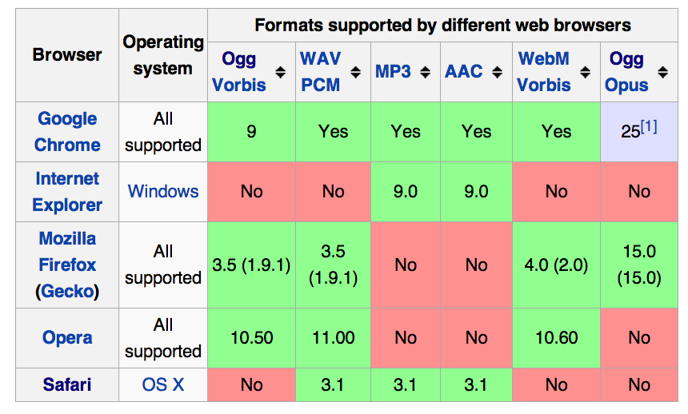

Multimedia in HTML5
Prehistoric HTML
Before HTML5, browsers could only natively display one type of multimedia.
<img src="rude_penguin.gif">

The plugin era
Plugins proliferated:
- 1991: Apple Quicktime (.mov)
- 1994: MIDI (background music)
- 1995: RealAudio (.ra, .ram)
- 1997: RealVideo (H.263)
- 1998: Windows Media Player
- 1999: Quicktime for Windows (.mov, .mp3, .mp4, .swf)
- 2002: Macromedia Shockwave Flash (.swf)
- 2007: Microsoft Silverlight (flash, vid, etc.)
HTML support for plugins
To embed a file for a plugin to open, you'd use:
<embed>
Introduced in Netscape 2.0, a simple tag.
<object>
Introduced in HTML 4.01 spec, this tag supports more complex configuration.
The embed element
The embed tag should specify src and type attributes.
<embed type="application/x-shockwave-flash"
src="zombie_walk.swf"/>The object element
The object tag should have one or more param child tags that give info to the browser on what to embed.
<object width="300" height="150">
<param name="movie" value="zombie_walk.swf"/>
<param name="bgcolor" value="white"/>
</object>Embed Codes
The (old) Youtube embed code includes an object and an embed tag.
<object width="480" height="385">
<param name="movie"
value="https://www.youtube.com/v/ddm5bbeqHVA"/>
<param name="allowFullScreen"
value="true"/>
<param name="allowscriptaccess"
value="always"/>
<embed src="https://www.youtube.com/v/ddm5bbeqHVA"
type="application/x-shockwave-flash"
allowscriptaccess="always"
allowfullscreen="true" width="480" height="385"/>
</object>Embeds: Youtube (Example)
The code from the previous slide produces:
The problem with plugins
- Bad user experience (pop-ups)
- Didn't play nice with eachother (crash!)
- Opened up security holes (malware)
- Didn't work everywhere (Flash on iPads)
The dawn of native multimedia
In HTML5, you can embed audio or video using native HTML tags audio and video, and if the browser supports the tags, it will give users controls to play the file.
Why is native better?
- No plugins needed
- Better performance
- Native, accessible controls
The audio element
The audio element is used for embedding an audio player inside a page for a particular audio file.
You can use various attributes to customize the player: preload, autoplay, loop, and controls.
<audio src="argentina.ogg"
controls="true" preload="true"></audio>See also: Audio element reference
The video element
The video element embeds a video player for a particular video file.
You can use these attributes to customize the player: poster, preload, autoplay, loop, and controls.
<video src="chrome_japan.ogv" controls width="390"></video>See also: Video element reference
Exercise Time!
Codecs & Containers
Audio codecs
An audio track is compressed, stored, and decoded according to a codec. Most audio codecs support two channels of sound, some support more.
The most relevant audio codecs are:
- MP3: Patent-encumbered.
- AAC (Advanced Audio Coding): Patent-encumbered. Used in Apple products.
- Ogg Vorbis: Free, open-source, patent-free
Browser support
There is no official codec for browsers to support, so they vary:

Video container formats
A video file, like an ".avi" file, is really a container for multiple related files that describe a video, like:
- a video track
- one or more audio tracks with synchronization markers
- metadata (title, album art, etc).
The most popular video containers are:
- MPEG4: .mp4, .m4v
- Ogg: .ogv
- WebM: .webm
Video codecs
A video track is compressed and stored in a particular way, and a "codec" describes how to turn the stored data into the series of images that you see.
The most relevant video codecs are:
- H.264: Patent-encumbered.
- Theora: Royalty-free.
- VP8: Patented but licensed royalty-free.
Browser support
Each browser supports a different combo of formats and codecs, due to patents issues. This is the current situation:
Multimedia Encoders
There are now many online services, desktop apps, and command-line libraries for encoding, like:
- Miro Video Converter (app)
- Online Video Converter(online)
- FireFogg (Firefox plugin)
- HandBrake (open-source, cross-platform)
- Command-line
Multiple media sources
As we saw, different browsers support different formats. Thankfully, HTML5 lets us specify multiple sources for the video and audio elements, so browsers can use whichever works for them.
<video height="200" controls="">
<source src="media/chrome_japan.webm" type="video/webm"/>
<source src="media/chrome_japan.mp4" type="video/mp4"/>
<source src="media/chrome_japan.ogv" type="video/ogg"/>
</video>Fallback options
There are some browsers that don't support these new elements. In that case, you can provide a fallback option via a browser plug-in, like Java or Flash, and put the fallback inside the element. For example, here's a Flash fallback:
<video src="video.ogv" controls>
<object data="flvplayer.swf" type="application/x-shockwave-flash">
<param value="flvplayer.swf" name="movie"/>
</object>
</video>Exercise Time!
Accessibility
Tracks
The track tag can be used to specify subtitles, captions, chapters,
descriptions, and metadata:
<video src="video-file.mp4" controls>
<track src="en.vtt" kind="subtitles" srclang="en" label="English subtitles" default>
<track src="de.vtt" kind="subtitles" srclang="de" label="German subtitles">
<track src="ch-en.vtt" kind="chapters" srclang="en" label="English chapter listing" default>
</video>Track files
The WebVTT or SRT file format describes timed information.
Tags and annotations can be used to specify class names, timestamps, positioning:
1
00:00:10.500 --> 00:00:13.000 A:start
Elephants Dream
2
00:00:15.000 --> 00:00:18.000 A:end L:10%
And thus it <b>begins</b>... Captioning/Translation Tools
JavaScript APIs
API Attributes
Many of these attributes can be set via JS, and trigger events on change:
var video = document.getElementsByTagName("video")[0];
alert(video.currentTime);
video.playbackRate = video.playbackRate * 2;API Events
<div id="time">0</div>
<script>
var video = document.getElementsByTagName("video")[0];
video.addEventListener('timechange', function() {
document.getElementById("time").innerHTML = video.currentTime;
}, false);
</script>API Functions
<button id="play" title="play" onclick="playVideo()">play</button>
<script>
function playVideo() {
var video = document.getElementsByTagName("video")[0];
video.play();
}
</script>API Example
Exercise Time!
JavaScript Libraries
Hosted Conversion and Transcoding Services
The Future!
- Webcam input (getUserMedia)
- Streaming (Peer Connections, WebSockets)
- Audio API (Mozilla's or Google's)
- Web Speech API
- Chrome Experiments